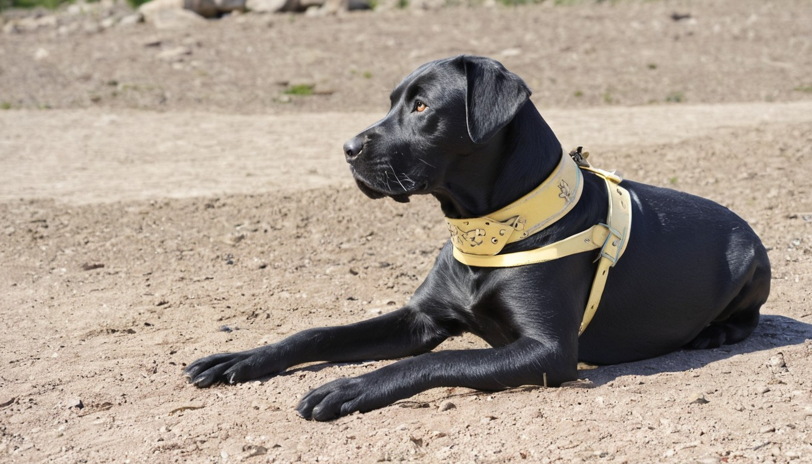

La vida de Boston

Boston es un perro que nació en Villavicencio, una ciudad de Colombia,
en el año 2014. Su dueño se llama Jeff, un joven que trabaja como
programador. Boston y Jeff comparten el gusto por el metal, y les gusta
escuchar bandas como Iron Maiden, Metallica y Megadeth. Desde pequeño,
Boston mostró una gran inteligencia y un espíritu rebelde. No le gustaba
obedecer las órdenes de nadie, ni siquiera de Jeff. Le gustaba explorar
la ciudad, hacer amigos con otros perros y enfrentarse a los gatos, a
los que consideraba sus enemigos naturales.
Boston es un perro que nació
en Villavicencio, una ciudad de Colombia, en el año 2014. Su dueño se
llama Jeff, un joven que trabaja como programador. Boston y Jeff
comparten el gusto por el metal, y les gusta escuchar bandas como Iron
Maiden, Metallica y Megadeth. Desde pequeño, Boston mostró una gran
inteligencia y un espíritu rebelde. No le gustaba obedecer las órdenes
de nadie, ni siquiera de Jeff. Le gustaba explorar la ciudad, hacer
amigos con otros perros y enfrentarse a los gatos, a los que consideraba
sus enemigos naturales.
Boston es un perro que nació en Villavicencio,
una ciudad de Colombia, en el año 2014. Su dueño se llama Jeff, un joven
que trabaja como programador. Boston y Jeff comparten el gusto por el
metal, y les gusta escuchar bandas como Iron Maiden, Metallica y
Megadeth. Desde pequeño, Boston mostró una gran inteligencia y un
espíritu rebelde. No le gustaba obedecer las órdenes de nadie, ni
siquiera de Jeff. Le gustaba explorar la ciudad, hacer amigos con otros
perros y enfrentarse a los gatos, a los que consideraba sus enemigos
naturales.
Un día, Boston decidió que quería cambiar el mundo. Se dio cuenta de que los perros eran tratados como inferiores por los humanos y los gatos, y que debían luchar por su libertad y su dignidad. Así que se mudó a Bogotá, la capital del país, y formó un grupo revolucionario llamado "Los Perros del Metal". Los Perros del Metal eran un grupo de perros que compartían la pasión por el metal y la rebeldía contra el sistema. Su objetivo era liberar a todos los perros de la opresión y la explotación, y crear una sociedad donde los perros fueran respetados y felices. Para ello, realizaban acciones de sabotaje, protesta y propaganda, usando el metal como su arma y su himno. Boston es un perro que nació en Villavicencio, una ciudad de Colombia, en el año 2014. Su dueño se llama Jeff, un joven que trabaja como programador. Boston y Jeff comparten el gusto por el metal, y les gusta escuchar bandas como Iron Maiden, Metallica y Megadeth. Desde pequeño, Boston mostró una gran inteligencia y un espíritu rebelde. No le gustaba obedecer las órdenes de nadie, ni siquiera de Jeff. Le gustaba explorar la ciudad, hacer amigos con otros perros y enfrentarse a los gatos, a los que consideraba sus enemigos naturales.

Boston se convirtió en el líder y el símbolo de Los Perros del Metal. Era admirado y temido por sus seguidores y sus enemigos. Su fama se extendió por todo el país, e incluso por el mundo. Algunos lo consideraban un héroe, otros un villano. Pero nadie podía negar que Boston era un perro único, que había dejado su huella en la historia. Boston es un perro que nació en Villavicencio, una ciudad de Colombia, en el año 2014. Su dueño se llama Jeff, un joven que trabaja como programador. Boston y Jeff comparten el gusto por el metal, y les gusta escuchar bandas como Iron Maiden, Metallica y Megadeth. Desde pequeño, Boston mostró una gran inteligencia y un espíritu rebelde. No le gustaba obedecer las órdenes de nadie, ni siquiera de Jeff. Le gustaba explorar la ciudad, hacer amigos con otros perros y enfrentarse a los gatos, a los que consideraba sus enemigos naturales.Boston es un perro que nació en Villavicencio, una ciudad de Colombia, en el año 2014. Su dueño se llama Jeff, un joven que trabaja como programador. Boston y Jeff comparten el gusto por el metal, y les gusta escuchar bandas como Iron Maiden, Metallica y Megadeth. Desde pequeño, Boston mostró una gran inteligencia y un espíritu rebelde. No le gustaba obedecer las órdenes de nadie, ni siquiera de Jeff. Le gustaba explorar la ciudad, hacer amigos con otros perros y enfrentarse a los gatos, a los que consideraba sus enemigos naturales.